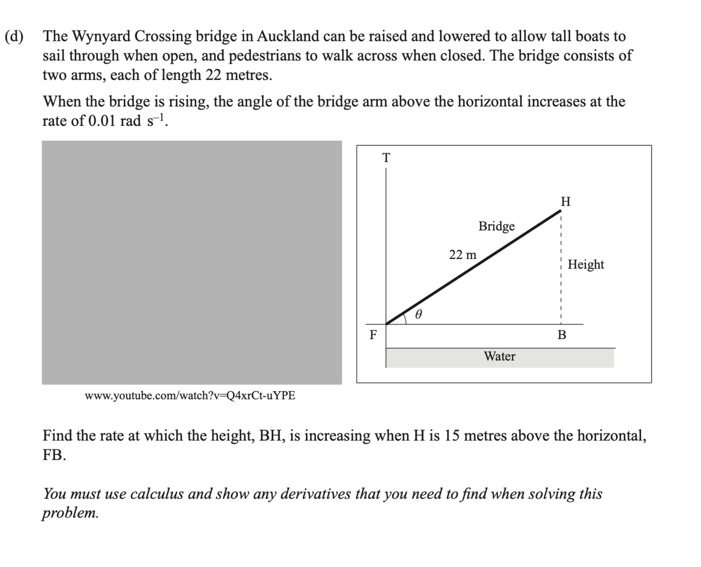

Level 3 Differentiation Walkthrough
2019 Differentiation · Q2(d)
2019 Paper
Question
The Wynyard Crossing bridge in Auckland can be raised and lowered to allow tall boats to sail through when open, and pedestrians to walk across when closed. The bridge consists of two arms, each of length \(22\) metres.
When the bridge is rising, the angle of the bridge arm above the horizontal increases at \(0.01\text{ rad s}^{-1}\). Find the rate at which the height, BH, is increasing when H is \(15\) metres above the horizontal, FB.
You must use calculus and show any derivatives that you need to find when solving this problem.
Original question scan

First walkthrough idea
Focus to try first
Related rates for the height of a rising bridge arm.
Step 1
Relate height and angle
Use the right triangle formed by the bridge arm and the height.
Show the first step’s working
Walkthrough overview
What this question practises
This 2019 walkthrough is part of AS91578 — Apply differentiation methods in solving problems.
Method: Related rates for the height of a rising bridge arm.
This is Question 2(d) from the 2019 NCEA Level 3 Differentiation paper for AS91578 — Apply differentiation methods in solving problems. Use the guided hints to practise the method before revealing the full working.
Calc.nz is an independent learning resource. Compare questions, diagrams, and assessment information with the official NZQA resources for AS91578.
Page updated .
Learning summary
Review the method, not only the answer
This walkthrough helps you practise related rates for the height of a rising bridge arm. Use the hints to plan the method, then repeat the question without hints and check each step.
Check
Differentiate with respect to time consistently, then include the correct units and contextual interpretation.
Calculus essentials: algebra, logarithms, rules, radians and domains
Continue practising
Try a related question: 2025 Differentiation · Q3(c). Attempt it before opening working, then return to this question later.
- All 2019 Differentiation walkthroughs
- All AS91578 Differentiation years
- Practise more questions using this skill: Related rates